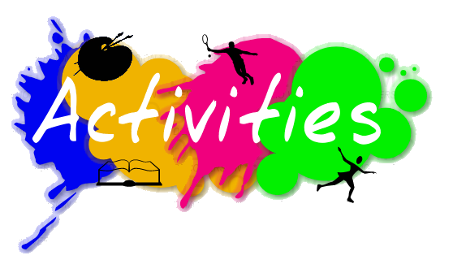

Tell me more
Events

The Pizza Experience at The Raymond Theatre
October 1, 2018 - January 29, 2019
The Raymond Theatre, 129 N. Raymond Ave
Pasadena, 91103 United States
Bai Holiday Ice Rink at Pershing Square
November 15, 2018 - January 21, 2019
Pershing Square, 532 S Olive St, Los Angeles
Los Angeles, 90013 United States
Enchanted: Forest of Light Returns to Descanso Gardens
November 18, 2018 - January 6, 2019
Descanso Gardens, 1418 Descanso Dr
La Cañada Flintridge, CA 91011 United States
Activities
PAY A VISIT TO THE O2
Price from: £30.00 per person (Walk the O2)
Location: Peninsula Square, London SE10 0DX
IT’S THE GREAT BRITISH BAKERY OFF!
Price from: £90.00 per person
Location: Multiple venues
FOOTGOLF
Price from: £30.00 per person
Location: Multiple sports centres on the outskirts of London